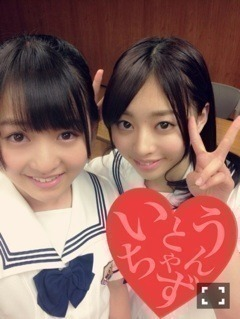
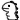
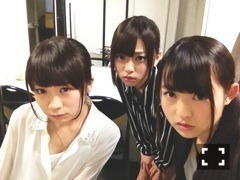

| 2013/06 24 Mon | 447回目*marika |

スタンプの位置不自然

PEARL BOWL XXXⅥ、
ガールズルールのまりかポジは
ねねがやってくれます！
ねねちゃんねねちゃん♪
今日は新曲の振り入れがあった！
楽しすぎる！
すっごい激しいダンス。
いつ披露できるかなー楽しみよー
.........
昨日パパにお昼ご飯作りました。
父の日に何もできなかったからね、
いつも応援してくれて
ありがとう。お仕事頑張ってね！

アボカド豆腐クリームパスタ
一回作ってみたかったんだー
ママが心配してたけど
もう大丈夫だねって言われた笑
なかなか美味しかったよー
最近料理頑張ってるんだ

ほめてほめてーふがふが
**********
 朝何時に起きてますか?
朝何時に起きてますか?
 平日学校ある日は6時！
まりっかが今夏挑戦してみたい
平日学校ある日は6時！
まりっかが今夏挑戦してみたい
ファッションとかってありますか？
ミニワンピ、セットアップとか
今年の夏海かプール行くの？
行く予定はないけど
焼けるからなるべくは行きたくない笑
好きなアイスは何？
チーズケーキ系だろう。
勉強するとき音楽聞く派？
聞かない派？
それはやったことないな...
でも聴いてたら集中できなそうだ。
理想の男性はどんな感じ??
マナーがある人、自然体の人
言われたい
告白のセリフってどんなの？
直で言われたら
照れてしまうと思う。
小さくて、可愛らしい足を
してるで御座るな！
もし、よろしければ、
もし、よろしければ、
足の大きさを教えて下され！
23.5で御座る。
そこまで小さくないので御座る。
電車は、座ってたい派？
立ってる派？
長時間立ってて貧血になった
トラウマがあるから座ってたい派...
まりちゃがよく買うお菓子は？
梅系！ヨーグルト！
ヨーグルトだいすき。
コンビニ入ったら
ヨーグルトのあるコーナーに行く。
麺類は今もすすれないの？
すすれないのはそうだけど、
それ以前にすすりたくないんだ。
服にびちゃって付いたら泣くので

**********
昨日放送されたBADBOYS J
最終回でした。
実由にはなんと他のチームに
彼氏がいたんですねーなんとまあ。
いやーひどい娘だ！
最初の方、美香さんが怒られてるのに
自分はいるのを黙ってただなんて。
最後まで見てくださったみなさん
本当にありがとうございました！
共演者のみなさん、スタッフさん
ありがとうございました！
レディース役。
なかなか迫力がなかったと
思うのですが笑
どんな役でも、出られるだけで
すごく嬉しかったです！
現場で学んだことが沢山あります。
演技はまだまだだけど、
これからも挑戦したいです！

ナイツレディース3人組
キメ顔、この違和感←
映画もやるからみなさんも
チェックしましょう

.........
おばあちゃんから
さくらんぼが届いたっ

美味し過ぎて一気に20個食べた。
あちゃちゃ

まりか
コメント(290)
2013/06/24 00:00